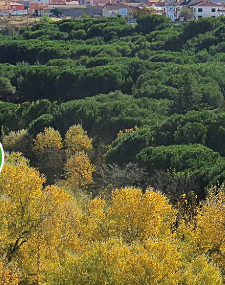

Se trata de una pequeña masa forestal de unas 70 ha de extensión, con carácter de parque suburbano. Ubicado en un valle fluvial excava-do inmediatamente al noroeste del casco urbano, comienza justo donde termina la ciudad. La mayor parte está cubierto de pinar de piñonero, con presencia de ejemplares muy viejos. En torno al arroyo Valorio o Valderrey crece un bien conservado bosque de ribera, dominado por álamos y chopos con sotobosque de olmos y zarzas. Además encontramos numerosas especies arbóreas de tipo ornamental, plantaciones de arizónicas y restos de antiguos cultivos leñosos, entre los que destaca el almendro, y del bosque de quercíneas original. En los llanos en altura que rodean el bosque existen pastizales xerófilos y acidófilos, con importante presencia del barceo, alternando con parcelas de cereal de secano.
Valorio destaca por sus poblaciones de aves forestales, con buenas representaciones de rapaces nocturnas (cárabo, búho chico, autillo y mochuelo) y pícidos (torcecuello, pito real, pico picapinos y pico menor). Además cuenta con buenas poblaciones de paseriformes como ruiseñor común, mosquitero ibérico, oropéndola, gorrión molinero y escribano soteño, y es un buen lugar para la observación de diversas rapaces que lo sobre-vuelan habitualmente, en especial los milanos real y negro y el águila calzada. En los espacios abiertos de su entorno más inmediato abun-dan las cogujadas montesina y común y están presentes otras especies características de estos medios como el aguilucho cenizo, el alcaudón real y la collalba gris.
